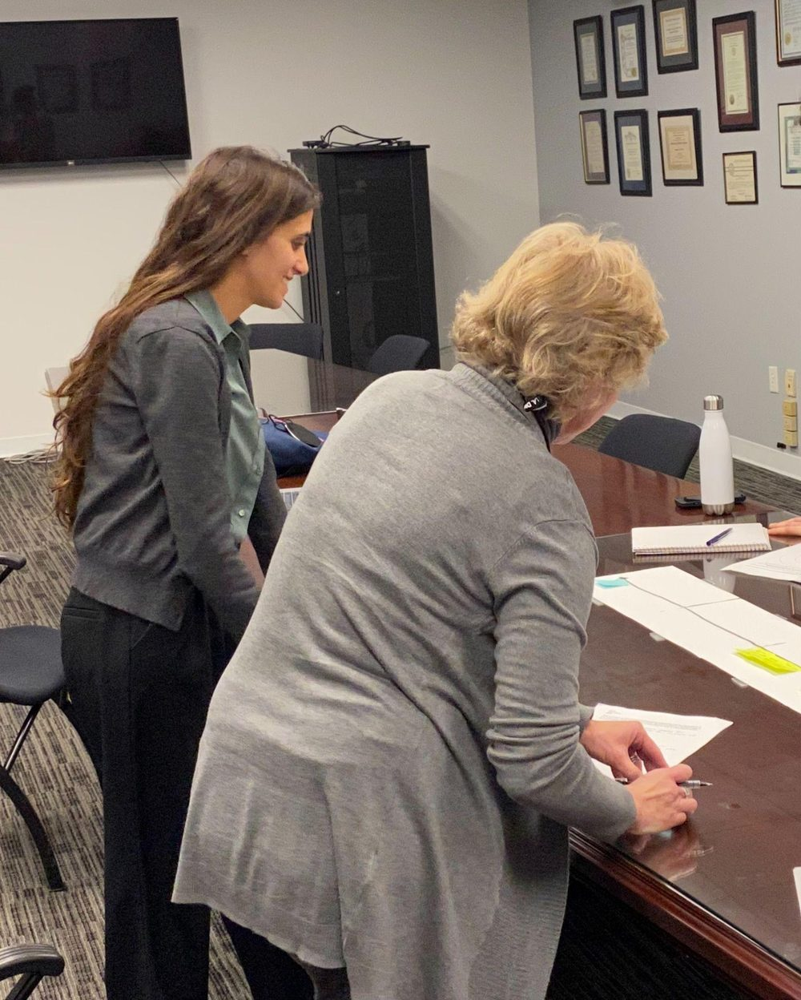

Getting Compensation to More Victims of Crime
Closing the gap between eligible crime victims and those who actually apply for compensation.
Despite rising rates of violent crime, fewer eligible victims were applying for the compensation designed to support their recovery. Research with 42 stakeholders found the core problem wasn't awareness — it was that victims needed the right message, from the right messenger, at the right moment in their recovery. That reframing shifted the agency's strategy from generic public-awareness campaigns toward targeted outreach through trusted intermediaries.
The challenge
A U.S. state's victim compensation agency needed to understand why eligible victims of violent crime weren't applying for compensation, and what was blocking them at each stage of recovery.

My role
I facilitated client kickoff activities, drafted the research plan, recruited participants, reviewed literature and existing data, moderated interviews, conducted field observation, analyzed and synthesized findings, developed the victim journey map, and prepared and delivered the final presentation.
Methods
Desk research; 42 stakeholder interviews and site visits with agency staff, claims processors, victims of crime, community-based organization staff, victim advocates, law enforcement, and mental health providers; journey mapping; stakeholder mapping.
Legal constraints on disclosing applicant and partner-organization information made recruiting crime victims difficult. We worked around this through direct fieldwork — visiting organizations, police stations, and victim advocates directly rather than relying on a recruitment panel.
Key insights
- The gap between victims and applicants is about more than awareness — it needs targeted, well-timed messaging.
- The application process needed more clarity at every step — solved with checklists and clearer process guidance.
- External partners (advocates, hospitals, law enforcement) play a critical support role for victims but had little connection to the agency itself.
- The most successful applications happen when a victim has support throughout the entire process.